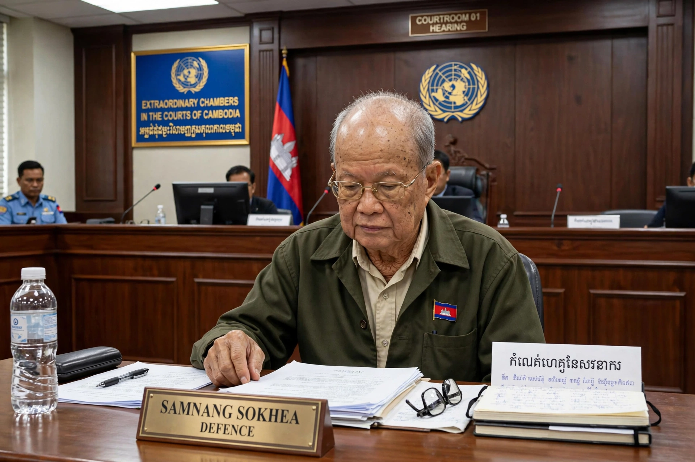

| Nuon Chea | |
|---|---|
| Born | 7 July 1926, Battambang, Cambodia (as Lao Kim Lorn) |
| Died | 4 August 2019 (aged 93), Phnom Penh, Cambodia |
| Known for | Deputy Secretary of the Communist Party of Kampuchea; "Brother Number Two" |
| Criminal charge | Genocide, crimes against humanity, war crimes |
| Penalty | Life imprisonment |

Nuon Chea (7 July 1926 – 4 August 2019), born Lao Kim Lorn, was a Cambodian communist politician who was the chief ideologist and second-in-command of the Khmer Rouge, known as "Brother Number Two" after Pol Pot.
As Deputy Secretary of the Communist Party of Kampuchea and chairman of the assembly of Democratic Kampuchea, Nuon Chea was centrally involved in the regime's policies, including the forced evacuation of cities, collectivisation and the purges in which between 1.5 and 2 million people died.
Nuon Chea surrendered in 1998 under an amnesty, then was arrested in 2007 and tried by the Extraordinary Chambers in the Courts of Cambodia. He was convicted of crimes against humanity in 2014 and, in 2018, of genocide against the Vietnamese and Cham peoples, receiving life sentences. He consistently maintained he had not known of the killings. He died in a Phnom Penh hospital in 2019 while his genocide appeal was pending.